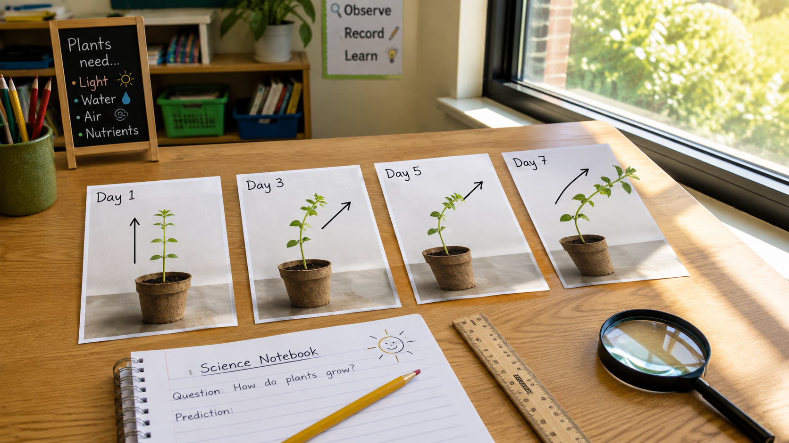

Start here. Learn the words you will use today.
A small plant has been sitting beside a sunny window for one week. Its stem is no longer straight up. It's leaning — right toward the glass.
Good scientists write down what they see before they try to explain it. We'll come back to your wondering question at the end of the lesson.
Tap each card to flip it and read the definition. These words will help you understand the investigation today.
Copy this sentence carefully into your science notebook:
"A plant's growth toward light is a response to a stimulus in its environment."
Now learn the main science idea.
When light shines from one side, a plant can't pick up its roots and walk toward it. But it can do something almost as surprising — it can slowly grow in that direction.
This is called phototropismphototropismGrowth toward or away from light.. The word "photo" means light. Over a few days, the stem and leaves bend toward the source.
In science, a stimulusstimulusSomething in the environment that causes a living thing to react. is something in the environment that causes a reaction. For a plant near a window, light is the stimulus.
The plant's responseresponseA change caused by a stimulus. is to bend toward the light. This happens slowly — over days, not seconds.
Scientists observe plants over several days to see the growth patterngrowth patternA clear change in how something grows over time.. A single day of data doesn't show much. But four or five days of observations together can reveal a clear direction.
When the stem bends more each day — always toward the same side — that's evidenceevidenceInformation that supports an explanation.. The data tells a story.
Real-World Connection: Farmers and gardeners use knowledge of phototropism to position plants where they'll get the most sunlight.
👆 Tap any part of the diagram to learn more.
Phototropism is a plant's growth response to light. Light is the stimulus, and the bent stem and turned leaves are the response. This growth pattern shows up clearly when scientists observe the same plant over several days.
Young sunflower plants track the sun all day — slowly turning from east to west — then reset overnight to face east again. By the time they're fully grown and flowering, they stop moving and face east permanently.
Now test the idea yourself.

A small plant was placed beside a window. Scientists watched it carefully for seven days. Your job is to study their data and find the pattern.
📋 Plant Detective Case File — copy all four entries into your notebook
Now follow the investigation steps below. Record your work in your science notebook as you go.
Copy the data table: Write all four rows into your science notebook — Day 1 through Day 7.
Draw four sketches: Draw a simple plant for each day — Day 1, Day 3, Day 5, and Day 7. Put the window or sun on the right side of each sketch. Use an arrow to show which way the stem is growing.
Find the pattern: Look at your four sketches side by side. Write one sentence that describes what changed from Day 1 to Day 7.
Think ahead: Write a prediction — what do you think would happen on Day 14 if nothing changed? What if you moved the light to the left side instead?
Think about these questions. Talk through your ideas in your mind or with someone nearby.
Tell the story of this plant's week — what it did on Day 1, how it changed, and where it ended up by Day 7. Use your sketches to help you tell it.
Think through each question and write your answer in your notebook before moving on.
Check what you understand.
Show what you learned.
🔍 Part A — Label
Draw the Day 7 plant in your science notebook. Then label each part below.
🚀 Part B — Short Answer
Answer in complete sentences. Use your science vocabulary!
What caused the plant to bend — and what does that tell you about how plants survive?
What do you think?
💡 Start with: "I think the plant bent because…"
What did you observe that supports your thinking?
💡 Start with: "I know this because when I looked at the data, I noticed that…"
Why does that make sense?
💡 Start with: "This makes sense because…"
📚 Try to use at least one of these words: phototropism, stimulus, response, evidence
🎨 Part C — Draw & Compare
Draw two plants side by side — one on Day 1 and one on Day 7. Label at least 5 parts on the Day 7 plant and use arrows to show the direction of growth.
Submit your work on Canvas using one of these options:
Make sure your submission includes all of these: